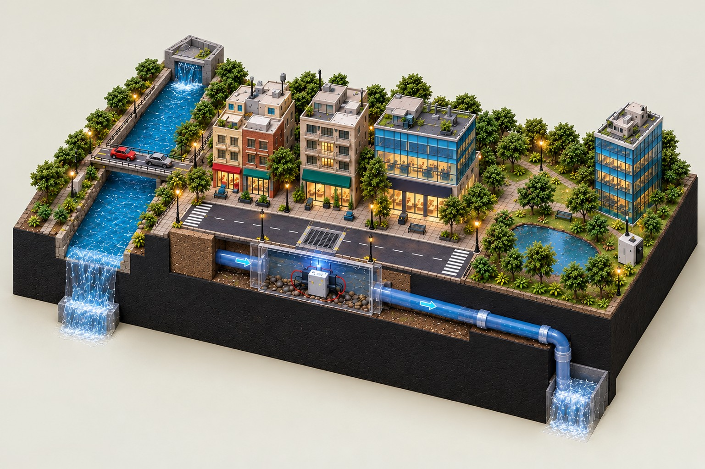

Flood monitoring overview
Live gateway state, field-node telemetry and system health
ESP32 · FLOOD01
UNKNOWNRain & load-cell telemetry
—raw ADC
Rain sensor calibration is unverified; no rainfall rate is reported.
Water level / distanceNot reported
TurbidityNot installed
Packet age—
Packet loss—
LoRa RSSINot reported
HX711 load cellRaw count only
ESP32 · GAS01
UNKNOWNEnvironmental & structural
—raw ADC
Soil calibration is unverified. Gas and motion readings are shown only when present.
Gas raw—
Gas alertUnknown
Motion (raw XYZ)Not reported
Packet age—
Packet loss—
Turbidity / pressureNot reported
DATA PATH
No snapshotSystem flow & device health
02ESP32 nodesFLOOD01 · GAS01
→
RFLoRa 433 MHzLink status unknown
→
PiTTGO → PiSerial status unknown
→
APIDashboard APIWaiting for response
Drain sensorNOT INSTALLED
River sensorNOT INSTALLED
CameraNOT CONFIGURED
Gemini analysisNOT CONFIGURED
MEDIA & INSPECTION
Camera & AI analysis
WAITING FOR PI
Waiting for Raspberry Pi camera
The Pi camera publisher will send its latest JPEG frame to the gateway.
GEMINI INSPECTIONUnavailable
Confidence · not certaintyUnknown
Action requiredUnknown
No AI analysis is available in the current backend.
TWIN EVENT STORE
WaitingRecent system events
Waiting for event data from the gateway.
Drainage node
● ONLINEWATER LEVEL
8.1cm
≈
Node temperature29.2°C● NOMINAL
Sensor readings
Route integrity
3 HOPSAuto-route enabled
18 mm/h
DryExtreme
12%
ClearFully blocked
12.4 cm
NormalOverflow
Rainfall, soil moisture and gas readings appear here only when received from real sensor hardware.
Last 60 seconds
River levelDrain level
−60 s−40 s−20 snow
Rainfall14 m
Drainage11 m
Low area7 m
River4 m
Alert register
0 ACTIVETemporary page-only state; not saved to the gateway.
Event log
Sensor trust
BATTERY · RSSI · LOSS · FAULTSConditions now
ARCHIVERainfall and cloud cover
Recorded rainOutlook rainCloud cover
Archive storm library
SYNTHETIC SAMPLES · ILLUSTRATIVE ONLYInference network
EVIDENCE → RULES → CONCLUSIONS · click any node for its proofWhy? (backward chaining)
GOAL-DRIVENClick a node in the network or an alert to see its proof.
Best explanation
RELATIVE SUPPORT · NOT PROBABILITYForward-chaining trace
Decision history
SQLITE · CLICK TO REPLAYWhat if…? (counterfactual)
MODEL EXPERIMENT
1Expand twinRainDrainLow areaRiverGateway
Scenario alertNo active hazard detected